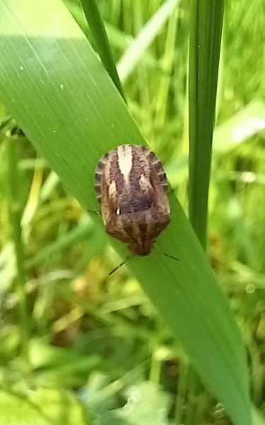

| Soort | Naam | Foto | Omschrijving |
|---|---|---|---|
| Wantsen | Brandnetel blindwants |  |
Kamp C, Westerlo, Brandnetel |
| Koolschildwants |  |
Kwarekken, Westerlo, Struikgewas | |
| rode halsbandwants |  |
Thuis, Westerlo, bloemenperk | |
| Rodedendron cicade |  |
Thuis, Westerlo, rodedendron | |
| Gewone pantserwants |  | Kwarekken, Westerlo, grassen | |
| Kevers | Groene bladsnuitkever |  |
Kamp C, Westerlo, brandnetel |
| Hertshooi steilkopje |  |
Kwarekken, Westerl, struikgewas | |
| Kleine populieren boktor |  |
Thuis, Westerlo, bloemenperk | |
| Tweekleurige smalboktor |  |
Thuis, Westerlo, rodedendron |